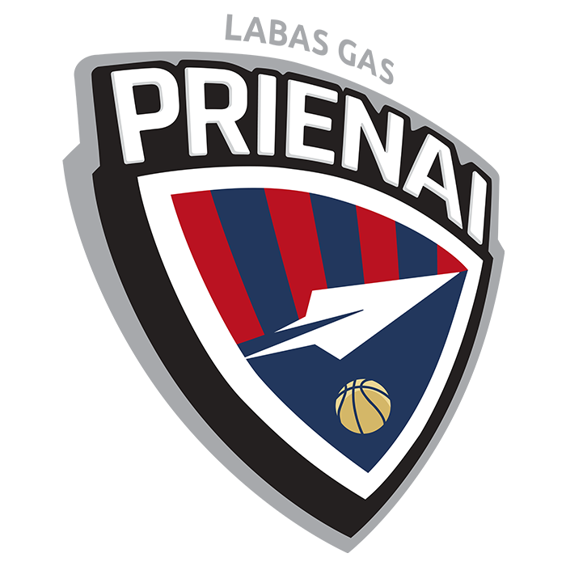

Prienų „Labas GAS““

Įkūrimo data:
1994
Vyr. treneris:
Tomas Gaidamavičius
Dabartinė komandos sudėtis
- Jogminas, Justas
- Gadiliauskas, Rokas
- Sargiūnas, Ignas
- Pušica, Vasilije
- Mockus, Mintautas
- Kljajič, Jovan
- Durham, Juwan
- Stankevičius, Giedrius
- Ivanauskas, Rapolas
- Bergaudas, Giedrius
- Venskus, Erikas
- Staniulis, Mantvydas
- Jurgelionis, Dominykas
- Valenta, Edas